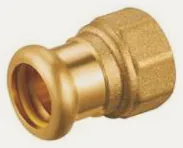
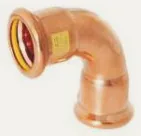
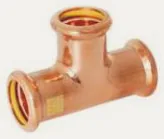
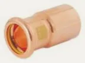
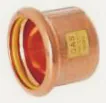
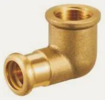
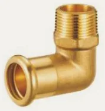
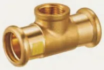
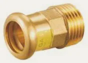
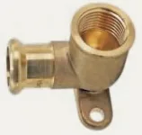

- Armatex
- Złączki zaciskane
- Złączka z GW 7270
Besco · Miedź press, profil M · gaz
Złączka z GW press do gazu, profil M 7270
Złączka z GW z linii miedź press, profil M · gaz: 13 rozmiarów od 15 × 1/2 do 35 × 1 1/4. Zastosowanie: gaz ziemny, LPG. Norma EN 1254-7.
- Rozmiary
- 13
- Ciśnienie
- 5 bar
- Temperatura
- −20…70 °C

Rozmiary i numery artykułów
Źródło: katalog Besco 2026| Rozmiar | Nr artykułu | Worek | Karton | Ilość do zapytania |
|---|---|---|---|---|
| 15 × 1/2 | 7902015012 | 10 szt. | 150 szt. | |
| 15 × 3/4 | 7902015034 | 10 szt. | 100 szt. | |
| 18 × 1/2 | 7902018012 | 10 szt. | 100 szt. | |
| 18 × 3/4 | 7902018034 | 10 szt. | 80 szt. | |
| 22 × 1/2 | 7902022012 | 10 szt. | 100 szt. | |
| 22 × 3/4 | 7902022034 | 10 szt. | 80 szt. | |
| 22 × 1 | 7902022100 | 10 szt. | 50 szt. | |
| 22 × 1 1/4 | 7902022114 | 5 szt. | 40 szt. | |
| 28 × 3/4 | 7902028034 | 10 szt. | 50 szt. | |
| 28 × 1 | 7902028100 | 10 szt. | 50 szt. | |
| 28 × 1 1/4 | 7902028114 | 10 szt. | 40 szt. | |
| 35 × 1 | 7902035100 | 10 szt. | 40 szt. | |
| 35 × 1 1/4 | 7902035114 | 5 szt. | 30 szt. |
- Linia
- Miedź press, profil M · gaz
- Zastosowanie
- gaz ziemny, LPG
- Norma
- EN 1254-7
- Aprobaty
- DVGWINiG
- Nazwa w katalogu
- Female Adaptor Gas
Zapytaj o wycenę: Złączka z GW 7270.
Dodaj rozmiary do listy przyciskiem „Dodaj” albo od razu napisz do nas. Ceny hurtowe, dostępność i terminy przygotujemy w ciągu jednego dnia roboczego.
Inne produkty w linii
Szukaj w linii Miedź press M · gaz Łuk 90° wz7001 · 5 rozm.
Łuk 90° wz7001 · 5 rozm.
Łuk 90° ww7002 · 5 rozm.Łuk 45° wz7040 · 5 rozm. Łuk 45° ww7041 · 5 rozm.
Łuk 45° ww7041 · 5 rozm. Trójnik równoprzelotowy7130 · 5 rozm.
Trójnik równoprzelotowy7130 · 5 rozm.
Trójnik redukcyjny7130R · 10 rozm.
Redukcja wz7243 · 7 rozm. Mufa7270 · 5 rozm.
Mufa7270 · 5 rozm.
Zaślepka7301 · 5 rozm.
Kolano 90° z GW7090 · 5 rozm.
Kolano 90° z GZ7092 · 5 rozm.
Trójnik z GW7130 · 10 rozm.
Złączka z GZ7243 · 13 rozm.
Kolano ścienne z GW7472 · 3 rozm.